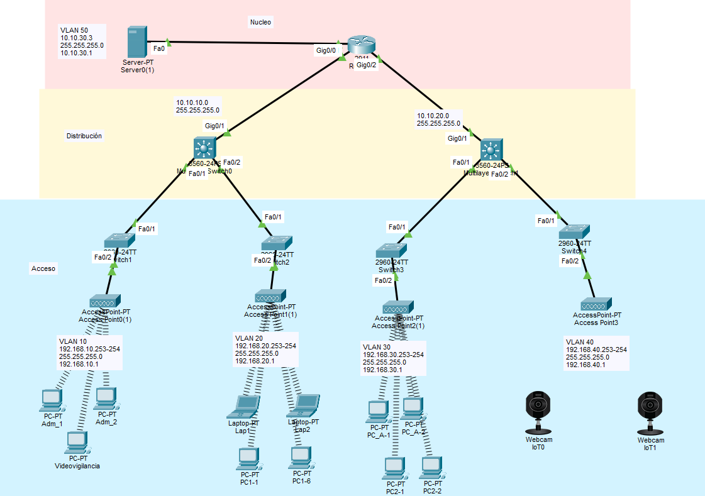

Topología de Red del Plantel
Esta es la arquitectura de red diseñada en Packet Tracer que soporta el servicio de internet como herramienta educativa.

Esta es la arquitectura de red diseñada en Packet Tracer que soporta el servicio de internet como herramienta educativa.
